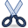

Note: Toolbars may be moved to a more convenient position. To detach and move, pick the handle (the vertical line of dots) at the left end and drag the toolbar to your preferred position. The resulting order of your tools may thus be different from this page.
Show whole map tool
 Use this tool to display the whole map on your screen. This can be particularly useful when items are accidently moved far from your working area and out of sight. This tool brings it onscreen - if your map is just a dot in one corner then the rogue feature is near the other edge of the screen.
Use this tool to display the whole map on your screen. This can be particularly useful when items are accidently moved far from your working area and out of sight. This tool brings it onscreen - if your map is just a dot in one corner then the rogue feature is near the other edge of the screen.
Object selector and edit tool
Using this tool, click on the map to select a single object. If the object you wish is not selected with the first click, click more times to go through all objects below the cursor. To select multiple object hold the Shift key as you click subsequent objects. If you Shift-click on an object which has been already been selected the click will deselect that object. A group of objects may also be selected by drawing a selection box with a left-click and drag.
When one or more objects are selected, a dashed box is drawn around them. Click and drag this box to move the selected objects as a whole. If only a single object is selected, the nodes defining this object become visible which can them be dragged with the mouse to change their position, just as the box.
There are different types of nodes:
Point tool
This tool enables you to insert a point symbol from the map symbol window. This includes a boulder, rocky ground, knoll, waterhole or any other symbol representing a point feature too small to be drawn to scale. Select the symbol for the feature to be inserted by picking it on the symbol window, pick the point tool and then pick on the map to insert that feature on the map.
Path tool (to draw lines and areas)
The path tool draws line objects such as contour lines, buildings (outlines) and roads and area objects such as open land or different vegetation densities. Choose the symbol for the feature to be inserted by clicking it on the symbol window, then pick the line tool and then pick on the map at the starting point for the line. At each subsequent click along the line a vertex will be created. To finish the path double click or right click.
To create a smooth curve click-&-hold as you draw the mouse away in the continuing direction — this creates a tangent point with two control points which may be subsequently used to intuitively refine the shape of the curve. For straight line segments release the mouse button and pick only at vertices.
To draw a closed path (perimeter of an area feature such as a building, parking lot or a lake) press the return key to close the last segment of the path to the starting point.
A filled area can be drawn using the path tool having selected an area symbol for the tool to use.To remove a misplaced point use the backspace key to undo, or leave it and correct the position using the edit tool. If the partly drawn line is discovered to be a mistake use the 'escape' key to abort and remove it entirely.
Circle tool
The circle tool can be used to draw round lines and areas. It is not possible to draw ellipses using it. To start drawing a circle, select the circle tool and a symbol of type line or area. Left click on a point on the map where you want the circle to start, move your mouse to where you want the end of the circle to be and then left click again. You can also click-&-hold at the starting point and then release at the end point.
When editing a circle, you will see that it consists of 4 curved parts. You can edit these just as you would do with an object drawn with the path and line tool.
Rectangle tool
The rectangle tool is used to draw shapes with any number of 90° corners.
Click once at the corners of the rectangle. Double our right click to end the rectangle.
When editing an object created using this tool then it will behave as if you had used the path tool and clicked in all the corners.
Text tool
This tool places text on the map. In order to be language-independent orienteering maps generally do not have names or text information on features. The text tool is useful for map titles and version numbers etc. It is necessary to select a text symbol (which determines the font etc.) before the text tool will become available.
Template markup tool
This tool enables the freehand drawing of lines, annotation and erasure on images loaded as templates, in a choice of 8 colors. Find notes on Templates here.
Pick and hold the left mouse button to draw while the mouse is moved. Hold the right mouse button as the mouse is moved to erase. This markup is saved on your template image — as the template image file is permanently altered it would be good practice to keep a copy of the template file in another directory.
Duplicate tool
This tool creates a duplicate of any selected object. Select the object then pick the tool to create an identical second symbol in the same place. The duplicate is created in the same place, so the appearance of the map does not immediately change. However, the duplicate can be selected and dragged to another location leaving the other behind. To drag a selected symbol pick and hold on the line of the enclosing box and drag as required. This tool is useful when applied to create and move identical groups of items.
Switch symbol
Sometimes it is desired to change one symbol to another. Select the symbol (feature) to change on the map, then select the target symbol in the symbol window. Pick on the tool and the map symbol will change to the target symbol - provided that the target symbol is of the same type as the map symbol (ie both must be either point, line, or area features.)
Fill tool
Having drawn a closed boundary which requires a fill (such as an uncrossable marsh or a building) select the boundary on the map (use the Object Selector tool), then choose the required fill symbol in the symbols window. A left pick on the fill tool will put the chosen fill into the selected boundary. If there is already a fill there, the boundary will have two fills. This is a similar function to the duplicate tool. A filled area can also be drawn using the line tool having selected an area symbol for the tool to use. If the symbol selected has a boundary then the boundary will also be drawn.
Reversing tool - Switch direction
This tool changes the direction of any line symbol drawn in the wrong direction. Thus an impassable cliff drawn in one direction will have the tags projecting correctly (to the 'down' side), but drawn starting from the other end the tags will appear on the wrong side. This tool fixes the problem. Highlight the symbol on the map then pick the tool.
Connect paths and lines tool
 This tool enables two lines (paths) to be joined together to create a single line or path.
This tool enables two lines (paths) to be joined together to create a single line or path.
It is necessary that the ends to be joined are very close together — less than 0.3mm apart. Select one path using the object selector tool then holding the shift key select the second path: both paths should now appear to be enclosed by a single box. A single left pick on the connect tool will join the ends together. It may be necessary to adjust the position and direction of the node at the join.
Unify areas tool
This tool will merge two or more areas into one, deleting the overlapping parts. Simply select two or more areas using the edit tool and then click on the unify Areas tool.
Intersect areas tool
This tool will intersect the first selected area object with all the other selected areas. Simply select two or more objects of type area and then click on this tool. The selected areas will then be intersected with the other selected areas.
Area difference tool
This tool will delete all parts of the first selected area that overlap with one of the other selected areas. Select two or more objects of type area and then click on this tool to apply it. All parts of the first selected object that overlap with any other selected object will be deleted from the first selected object.
Area XOr tool
This tool will XOr all selected areas. This means that all parts of the selected areas that overlap with one or more selected area will be deleted. Select two or more objects of type area and then click on this tool to apply it.
Cut lines and areas
This tool will cut an existing line or area object into two parts. For lines, select the object to be cut with the edit tool, then select the cut tool and click at the point where it is desired to break the line. Two additional end points will be added (one for each part of the line) at that point. It is also possible to click on a line and drag the mouse along it to remove the marked part completely.
To cut an area object it is necessary to start and end the cut line on the boundary of the area to be cut. It is not sufficient to cross the boundary; both ends of the line must be on the boundary within a very small tolerance. The cut line may be crooked or curved with any number of vertices. The cut occurs immediately when the line is finished on the boundary (with a double pick) so there is no opportunity to edit the cut line.
Cut holes tool
This tool will cut a hole into an area object. Select the object with the edit tool, then click the cut holes tool. On the area feature pick to describe the boundary of the required hole and after the final node press enter or right-pick to close. The hole will appear immediately. The boundary of the hole may then be edited in the same way as any path. If the line describing the hole crosses the boundary of the feature the area outside the former boundary and inside the "hole" will be filled with the area symbol; however, it is not advisable to do this. Features such as the unify areas tool or the area measurement will fail for this object.
Rotate tool
This tool will rotate any group of selected objects (which can include the whole map) about a selected pivot point and by any angle. Select the item(s) to be rotated using the edit tool, then pick the rotate tool. Next pick on the map at the point about which the rotation is to occur (the rotation centre) — this will be marked with a small circle. If it is desired that the feature symbol does not move significantly place the rotation centre in the middle of the symbol. Now pick a point at a convenient radius from the rotation centre and move the selected items about the rotation centre to the desired position.
If it is desired to rotate the selected features through some precise angle construct a guide with two intersecting lines at the required angle and put the rotation centre at their vertex. It is simple to use EditMenu/Undo (or ctrl-z) to undo any rotation, and to then select a different rotation centre to get an improved result.
Measure tool
 This tool can be used to measure line lengths and area sizes. It will show both real world length or area in meters and the resulting length or area on the printed map.
This tool can be used to measure line lengths and area sizes. It will show both real world length or area in meters and the resulting length or area on the printed map.
When this tool is activated, a window appears containing the measurements for the selected object. To measure different objects, the selection can be changed using the edit tool while the window is active. It is also possible to draw new paths to have their length or area shown.
Updated on ... April 27, 2012